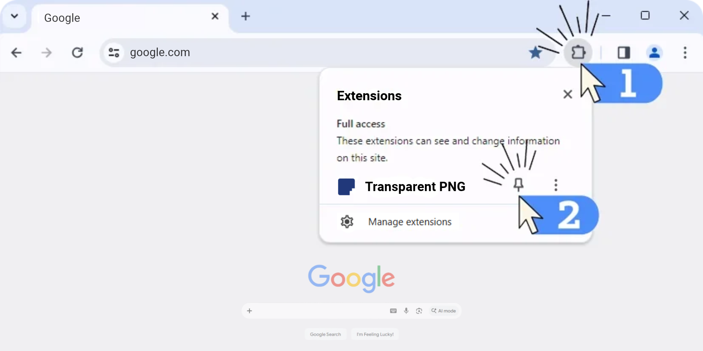
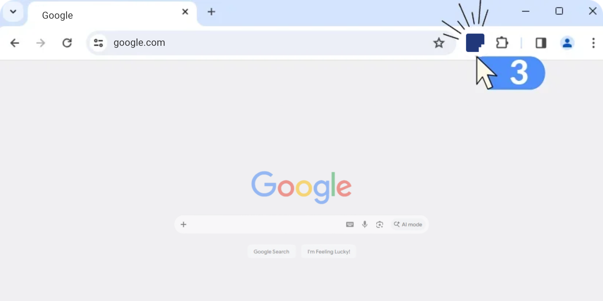

Thanks for choosing Transparent PNG!
1. Please make sure to pin it for fast access:

2. Click this icon to open the side panel:

1. Please make sure to pin it for fast access:

2. Click this icon to open the side panel:
